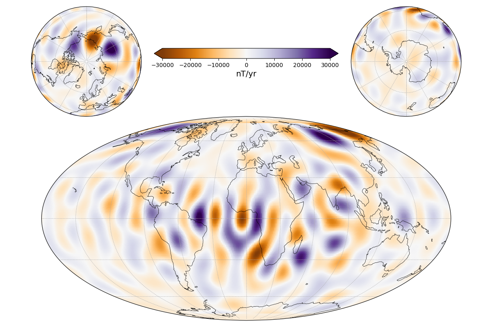

Note
Click here to download the full example code
Create a Global Map and Polar Views¶
Compute a map of the first time-derivative of the radial field component on the core surface in 2016 using CHAOS.
Out:
/home/ancklo/Documents/Python/ChaosMagPy/chaosmagpy/chaos.py:2471: UserWarning: Missing calibration parameters: 'pp_CAL'
warnings.warn(f'Missing calibration parameters: {err}')
import chaosmagpy as cp
import numpy as np
import matplotlib.pyplot as plt
import matplotlib.gridspec as gridspec
from mpl_toolkits.axes_grid1.inset_locator import inset_axes
import cartopy.crs as ccrs
model = cp.CHAOS.from_mat('CHAOS-6-x9.mat') # load the mat-file of CHAOS-6-x9
time = cp.data_utils.mjd2000(2016, 1, 1) # convert date to mjd2000
radius = 3485. # radius of the core surface in km
theta = np.linspace(1., 179., 181) # colatitude in degrees
phi = np.linspace(-180., 180, 361) # longitude in degrees
# compute radial SV up to degree 16 using CHAOS
B, _, _ = model.synth_values_tdep(time, radius, theta, phi,
nmax=16, deriv=1, grid=True)
limit = 30e3 # nT colorbar limit
# create figure
fig = plt.figure(figsize=(12, 8))
fig.subplots_adjust(
top=0.98,
bottom=0.02,
left=0.013,
right=0.988,
hspace=0.0,
wspace=1.0
)
# make array of axes
gs = gridspec.GridSpec(2, 2, width_ratios=[0.5, 0.5], height_ratios=[0.35, 0.65])
axes = [
plt.subplot(gs[0, 0], projection=ccrs.NearsidePerspective(central_latitude=90.)),
plt.subplot(gs[0, 1], projection=ccrs.NearsidePerspective(central_latitude=-90.)),
plt.subplot(gs[1, :], projection=ccrs.Mollweide())
]
for ax in axes:
pc = ax.pcolormesh(phi, 90. - theta, B, cmap='PuOr', vmin=-limit,
vmax=limit, transform=ccrs.PlateCarree())
ax.gridlines(linewidth=0.5, linestyle='dashed',
ylocs=np.linspace(-90, 90, num=7), # parallels
xlocs=np.linspace(-180, 180, num=13)) # meridians
ax.coastlines(linewidth=0.5)
# inset axes into global map and move upwards
cax = inset_axes(axes[-1], width="45%", height="5%", loc='upper center',
borderpad=-12)
# use last artist for the colorbar
clb = plt.colorbar(pc, cax=cax, extend='both', orientation='horizontal')
clb.set_label('nT/yr', fontsize=14)
plt.show()
Total running time of the script: ( 0 minutes 2.510 seconds)